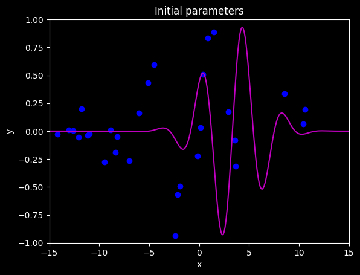

# import libraries
import numpy as np
import matplotlib.pyplot as plt
from matplotlib import cm
from matplotlib.colors import ListedColormap
plt.style.use('dark_background')
# Let's create our training data of 30 pairs {x_i, y_i}
# We'll try to fit the Gabor model to these data
data = np.array([[-1.920e+00,-1.422e+01,1.490e+00,-1.940e+00,-2.389e+00,-5.090e+00,
-8.861e+00,3.578e+00,-6.010e+00,-6.995e+00,3.634e+00,8.743e-01,
-1.096e+01,4.073e-01,-9.467e+00,8.560e+00,1.062e+01,-1.729e-01,
1.040e+01,-1.261e+01,1.574e-01,-1.304e+01,-2.156e+00,-1.210e+01,
-1.119e+01,2.902e+00,-8.220e+00,-1.179e+01,-8.391e+00,-4.505e+00],
[-1.051e+00,-2.482e-02,8.896e-01,-4.943e-01,-9.371e-01,4.306e-01,
9.577e-03,-7.944e-02 ,1.624e-01,-2.682e-01,-3.129e-01,8.303e-01,
-2.365e-02,5.098e-01,-2.777e-01,3.367e-01,1.927e-01,-2.222e-01,
6.352e-02,6.888e-03,3.224e-02,1.091e-02,-5.706e-01,-5.258e-02,
-3.666e-02,1.709e-01,-4.805e-02,2.008e-01,-1.904e-01,5.952e-01]])
# Let's define our model
def model(phi,x):
sin_component = np.sin(phi[0] + 0.06 * phi[1] * x)
gauss_component = np.exp(-(phi[0] + 0.06 * phi[1] * x) * (phi[0] + 0.06 * phi[1] * x) / 32)
y_pred= sin_component * gauss_component
return y_pred
# Draw model
def draw_model(data,model,phi,title=None):
x_model = np.arange(-15,15,0.1)
y_model = model(phi,x_model)
fix, ax = plt.subplots()
ax.plot(data[0,:],data[1,:],'bo')
ax.plot(x_model,y_model,'m-')
ax.set_xlim([-15,15]);ax.set_ylim([-1,1])
ax.set_xlabel('x'); ax.set_ylabel('y')
if title is not None:
ax.set_title(title)
plt.show()
# Initialize the parameters and draw the model
phi = np.zeros((2,1))
phi[0] = -5 # Horizontal offset
phi[1] = 25 # Frequency
draw_model(data,model,phi, "Initial parameters")